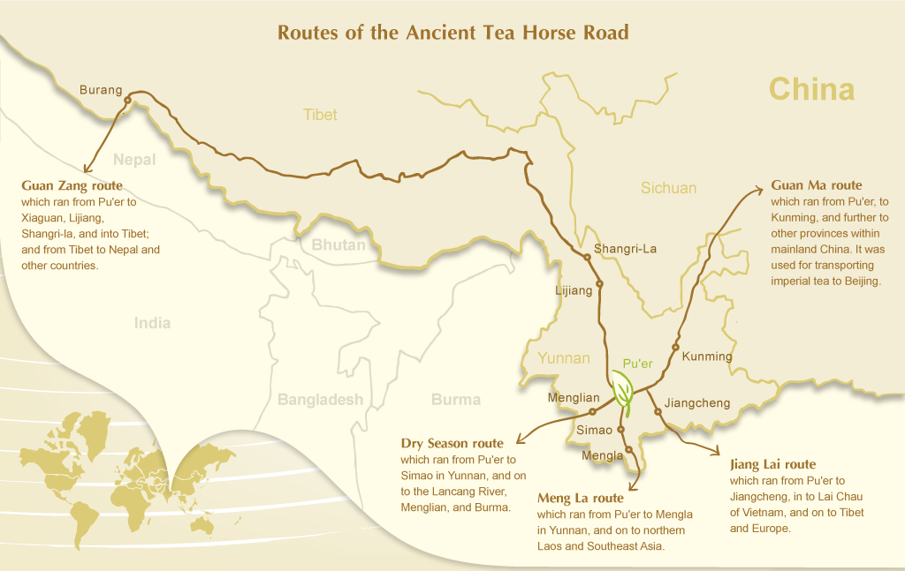
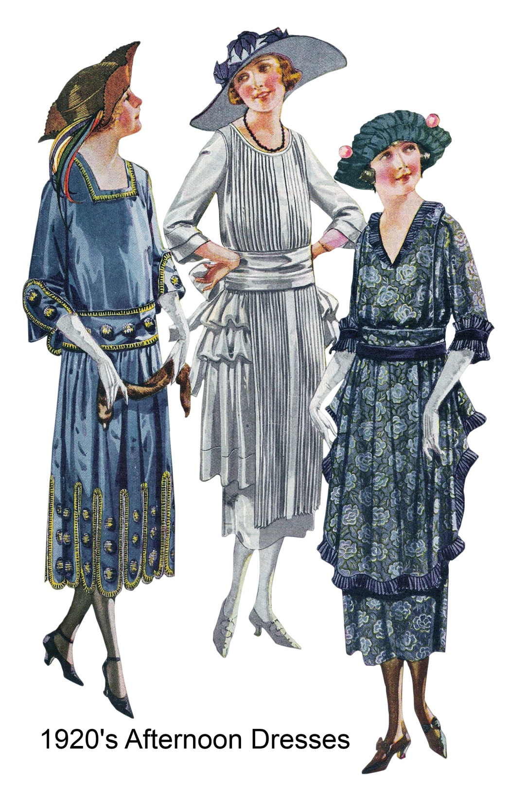

chapter4.2--handout
Background Information
Hotel Metropole and Rosey Rosenthal
“The old Metropole,” brooded Mr. Wolfsheim gloomily. “Filled with faces dead and gone. Filled with friends gone now forever. I can’t forget so long as I live the night they shot Rosy Rosenthal there...”
"老大都会，"沃尔夫山姆先生闷闷不乐地回忆道，"那里聚集过多少早已消逝的面容，聚集过多少如今已经不在人间的朋友。我只要活着就不会忘记他们开枪打死罗西·罗森塔尔的那个晚上。"
大都会酒店是纽约市第一家每个房间都用自来水的酒店。酒店位于时代广场附近的西43街147号，现在被称为“卡萨布兰卡时代广场酒店”(Casablanca hotel Times Square)，住过很多名人，包括Nick Arnstein（美国飞艇设计及制造家）和Bat Masterson（知名体育新闻记者）。

1912年7月16日凌晨，Herman Rosenthal被谋杀的地点就在该酒店。Rosenthal是纽约几个赌场的老板。据称，这起谋杀案是在Charles Becker的授意下进行的。Becker是纽约的一名警探，1915年因这起谋杀案被处决。
James Thurber在1991年出版的Robert Lopresti编辑的《瑟伯论犯罪》(Thurber on Crime)一书中，就这个问题写了一篇文章，名为《凌晨两点的大都会》(Two O’clock at the Metropole).
大都会酒店后来更名为罗索夫酒店(Hotel Rosoff)，现在是卡萨布兰卡酒店(Casablanca Hotel).
Trinity College, Oxford (牛津大学三一学院)
这是在三一学院校园里照的——我左边那个人现在是唐卡斯特伯爵。（It was taken in Trinity Quad — the man on my left is now the Earl of Dorcaster.）
盖茨比拿出了在牛津三一学院拍的照片，这让他的经历看起来又像是真的了。
三一学院（The College of the Holy and Undivided Trinity in the University of Oxford），是英国牛津大学的组成学院之一。该学院由Sir Thomas Pope于1555年创建，位于杜伦学院（Durham College）之前的土地上，在英国牛津的Broad Street，介于牛津大学贝利奥尔学院（Balliol College）和布莱克韦尔书店（Blackwell's bookshop）之间，Turl Street对面。

三一学院培养了三名英国首相，与贝利奥尔学院并列第二。校园周围是铁栅栏而不是围墙，学院的独特的蓝色大门，使其在外观上比牛津大学其他学院更加开放。尽管学校规模庞大，但学生人数相对较少，约有400人。原是一所男子学院，自1979年开始男女同校。
Vocabulary
luxuriate
vi. 茂盛的生长，生活奢侈，沉溺（to relax and enjoy something）
原文：A small, flat-nosed Jew raised his large head and regarded me with two fine growths of hair which luxuriated in either nostril.
一个矮小的塌鼻子的犹太人抬起了他的大脑袋来打量我，他的鼻孔里面长着两撮很浓的毛。
💧luxuriate在这里表示“（毛发）生长地很茂盛”；另一个常用短语是luxuriate in, 表示“（尽情享受，沉湎于，陶醉于 ”，比如：She luxuriated in all the attention she received.
她备受关注，一路陶醉其中。
rivalry
n. 竞争，较量（competition or fighting between people, businesses, or organizations）
原文：I laughed aloud as the yolks of their eyeballs rolled toward us in haughty rivalry. 他们冲着我们翻翻白眼，一副傲慢争先的神气，我看了忍不住放声大笑。
💧rival表示“对手”，rivalry就指“竞争”（competition or fighting）, 比如：He had a lot of rivalry with his brothers and sisters. 他和兄弟姐妹间经常较劲。
Crush Your Problems
- The smile comprehended Montenegro’s troubled history / and sympathized with the brave struggles of the Montenegrin people. / It appreciated fully the chain of national circumstances / which had elicited this tribute / from Montenegro’s warm little heart.
这一笑表示他了解门的内哥罗动乱的历史，并且同情门的内哥罗人民的英勇斗争。这一笑也表示他完全理解那个国家一系列的情况，正是这些情况使得门的内哥罗热情的小小的心发出了这个颂扬。
💧表达精讲
①comprehend 表示“理解”，尤其是指复杂或困难的事物；sympathize with 相当于feel sorry for.
Montenegro（门的内哥罗）也就是今天的黑山共和国，在一战的时候为了帮助邻国塞尔维亚而加入协约国，后遭到奥匈帝国的进攻，命运非常多舛。而Gatsby是如何对这个只有寸土之地的国家产生了深刻的理解和同情其实是一件令人费解的事情。
②appreciate 在这里不是“感激”，而是“完全理解”（to understand how serious or important a situation is）;
③the chain of national circumstances 指a series of conditions in Montenegro.
④which had elicited this tribute from Montenegro’s warm little heart 作定语从句修饰national circumstances; this tribute指门的内哥罗给Gatsby颁发勋章（向他表示）；elicit...from... “引起，使产生……”，注意from后面的部分（Montenegro’s warm little heart）是this tribute的发出者。
这句话可以改写成：This tribute (for Gatsby) was elicited from Montenegro's warm little heart by the chain of Montenegro's national circumstances. - We passed Port Roosevelt, / where there was a glimpse of red-belted ocean-going ships, / and sped along a cobbled slum / lined with the dark, undeserted saloons / of the faded-gilt nineteen-hundreds.
我们经过罗斯福港，瞥见船身有一圈红漆的远洋轮船，又沿着一条贫民区的石子路疾驰而过，路两旁排列着二十世纪初褪色的镀金时代的那些还有人光顾的阴暗酒吧。
💧表达精讲
①there was a glimpse of 相当于we had a glimpse of / we caught sight of.
②ocean-going 相当于 sailing towards the ocean.
③a cobbled slum, “铺满碎石路的贫民区”；cobble也就是cobblestone “圆形鹅卵石”，cobbled表示“洒满鹅卵石的”；slum和ghetto都可以指贫民区；
④the faded-gilt nineteen-hundreds, faded指“褪色的”；gilt指“镀金的”；nineteen-hundreds也就是1900s.
这里其实在指“镀金时代”（The Gilded Age）, 这个名字得益于马克·吐温也就是从南北战争结束到20世纪初，这个阶段的美国以工业发展和移民潮为标志。 - Over the great bridge, / with the sunlight through the girders / making a constant flicker upon the moving cars, / with the city rising up across the river / in white heaps and sugar lumps / all built with a wish / out of non-olfactory money.
在大桥上，阳光从钢架中间透过来在川流不息的车辆上闪闪发光，河对岸城里的楼高耸在眼前，像一堆一堆白糖块一样，尽是出于好心花了没有铜臭的钱盖起来的。
💧句式拆解
这段话可以看作是省略了谓语was的倒装句，还原成正常语序也就是：All (was) built with a wish out of non-olfactory money over the great bridge, with the sunlight..., with the city...（两个with结构都是主语all的伴随状语）
💧表达精讲
①make a constant flicker upon the moving cars 指阳光照射在移动的汽车上闪闪发光；
②the city rising up across the river 指河对岸的城市高楼耸立，rise up在这里不是动态动词，而是表示“高耸，矗立”；
③in white heaps and sugar lumps 指耸立的高楼像一堆一堆的白糖快，这里white heaps和sugar lumps是互文的手法，两个短语指代的对象相同（就是说white heaps也是white lumps; sugar lumps也是sugar heaps）;
white在这里是物质财富欲望的一种象征（dreams of potential wealth）
④built with a wish 指带着希冀建筑的，这里的wish指的是物质的愿望（materialistic hopes）;
⑤out of non-olfactory money 指用没有气味的钱来建造，olfactory表示“和嗅觉相关的”（connected with the sense of smell）, non-olfactory也就是“没有气味的”；money在这里只是一个象征，non-olfactory只是表示高楼并不是真的由钱堆成的，所以没有所谓的“铜臭味”，但本质上，这些高楼依然代表了人们对于一切物质美好的向往。 - The city / seen from the Queensboro Bridge / is always the city / seen for the first time, in its first wild promise / of all the mystery and the beauty in the world.
从皇后区大桥看去，这座城市永远好像是初次看见一样，那样引人入胜，充满了世界上所有的神秘和瑰丽。
💧表达精讲
in its first wild promise of... wild在这里不是“疯狂的”，而是表示“狂热的”（excited and energetic），也就是说纽约这座城市永远给人一种一切都充满希望的幻象，让人们为之狂热激动。
Content Analysis
Gatsby关于自己身世和来历的叙述让Nick感觉半真半假，但这都不影响他对Gatsby依旧有着强烈的好奇心。在今天的内容中，我们也得到了关于Gatsby的更多线索，不仅来源于Nick的隐喻性描绘，还有他们和Gatsby的朋友Mr. Wolfshiem的碰面都透露了不少细节。首先，Nick把Gatsby形容为一个创造可能性的人——
💧Clue 1: Gatsby is exactly the man who creates possibilities.
Evidence 1: “Anything can happen now that we’ve slid over this bridge,” I thought; “anything at all. . . . ” Even Gatsby could happen, without any particular wonder.
"我们现在一过这座桥，什么事都可能发生了，"我心里想，"无论什么事都会有……" 因此，连盖茨比这种人物也是会出现的，这用不着大惊小怪。
这句话强调了两点：首先是“任何事情都可以发生，甚至像Gatsby这样的”，暗示了Gatsby的矛盾性和不同寻常之处；其次是我们通常只会说一个人exist，而不会用happen这个词。“发生”通常是指事件，会带来一定的影响和结果。因此这里暗示Gatsby之后的一切行为都将带来不可预测的后果（尽管可能是暂时的）。
💧Clue 2: Gatsby is actually engaged in illegal business.
我们在前面的内容里读到了不少关于Gatsby的负面猜测，在昨天Chapter 4的开头，还提到了有很多女士讨论说Gatsby是做走私酒生意的：“He’s a bootlegger,” said the young ladies. bootlegger特指1920s这个时期从事非法制作、进口、销售酒类的人（people who illegally made, imported, or sold alcohol during this time），而非法的背景就是基于当时全国实行的禁酒令（Prohibition）. 虽然Nick并没有直接肯定这一点，但有两个细节都在暗指这个是事实。
Evidence 1: “Hot and small — yes,” said Mr. Wolfsheim, “but full of memories.”“What place is that?” I asked. “The old Metropole.”
"又热又小——不错，"沃尔夫山姆先生说，"可是充满了回忆。" "那是哪一家饭店？"我问。"老大都会。"
我们在背景里面已经介绍过，大都会酒店在当时的纽约是一个犯罪场所的聚集地，比如下文提到的那起谋杀案就发生在这里。从Mr. Wolfsheim的口吻也不难读出，他本身很有可能就是混黑社会的（a member of the underworld）. 而Gatsby会和他成为朋友，恐怕也是因为有一定时间的合作关系了。
Evidence 2:“Five, with Becker.” His nostrils turned to me in an interested way. “I understand you’re looking for a business gonnegtion.” The juxtaposition of these two remarks was startling. Gatsby answered for me: “Oh, no,” he exclaimed, “this isn’t the man.”
"五个，连贝克在内。"他鼻孔转向我，带着对我感兴趣的神情，"我听说你在找一个做生意的伙伴。" 这两句话连在一起使人听了震惊。盖茨比替我回答："啊，不是，"他大声说，"这不是那个人。"
gonnegtion即connection
Mr. Wolfsheim误把Nick当成Gatsby找到的一个生意伙伴，结果Gatsby匆忙否认。为什么Gatsby会这么紧张呢？我们看上一句，The juxtaposition of these two remarks was startling指的是Mr. Wolfsheim刚说完之前那起谋杀案一共抓了五个人，下一句就提到Gatsby在找生意伙伴，这两句话连在一起极容易让人产生不好的联想。但换一个角度来看，startling还包含另一层含义：Gatsby的确就在从事非法商业活动，而Mr. Wolfsheim阴差阳错地差点泄露了这件事，让Nick也不禁替Gatsby倒吸一口冷气。
这种人物的矛盾性和模糊感可以说是Fitzegerald的刻意为之，同时也是当时浮华的美国梦的一个缩影，光鲜和阴暗两面并存，让人困惑的同时又为其着迷。
Today's Bonus
💧1920s Afternoon Tea and Tea Dresses 1920年代上层社会的饮茶风尚
"不，今天下午。我碰巧打听到你约了贝克小姐喝茶。"（“No, this afternoon. I happened to find out that you’re taking Miss Baker to tea.”）尼克约了贝克小姐喝茶，而不是喝咖啡或是其他活动，可见当时饮茶在上层社会非常风行。
大约在9世纪，往来于欧洲和东方的商人、传教士和探险家开始接触中国和日本萌芽中的茶传统。阿拉伯贸易文件中提到的是煮苦茶叶的过程。后来，马可·波罗（Marco Polo）在他关于东方的游记中提到他发现了茶。
然而，直到17世纪茶才在西方出现。一般认为是一位葡萄牙传教士在葡萄牙和中国之间的商队间来回运送茶叶到欧洲的。大概在1610年，第一批日本和中国茶叶经由荷兰东印度公司（Dutch East India Company）由海路运抵欧洲。茶也通过从中国来的骆驼商队在著名的丝绸之路进入俄罗斯。

为了满足上流社会喝茶的时尚生活，英国东印度公司不辞艰辛地贩运起茶叶。在最初的几年里，东印度公司每年进口到英国的茶叶还保持在三位数，到了1690年，进口量已经猛增到近四万磅。
茶的流行迅速蔓延到阿姆斯特丹、巴黎和伦敦等城市，尽管其高昂的价格限制了皇室和贵族阶层的消费。饮茶在当时还是一种新奇的事物，在这个探索和发现的时代，它让富人们可以参与一些东方的冒险活动。
由于下午茶的盛行，也衍生出了下午茶的服饰。室内聚会则选择大多数适合季节的颜色。富裕家庭的礼服一般是优雅、轻盈，较多是白色的。搭配的是轻薄的透明丝袜，白色或类似的淡色。鞋子也可以是白色的高跟鞋，或者是T型带的中跟鞋。再加上一双白色棉质手套和一顶白色草帽，饰以白色花边。上层阶级穿纯白色的衣服，因为他们可以负担得起所有搭配的是饰品。
对于中产阶级来说，选择一件可以搭配黑色皮靴、深色长筒袜和任何颜色帽子的彩色下午装是更好的选择。每个中产阶级女性的衣橱里都有一件半正式的（semi formal）下午茶礼服。

原来饮茶在西方也是这样一种美的享受，气定神闲的你也来一杯吧~